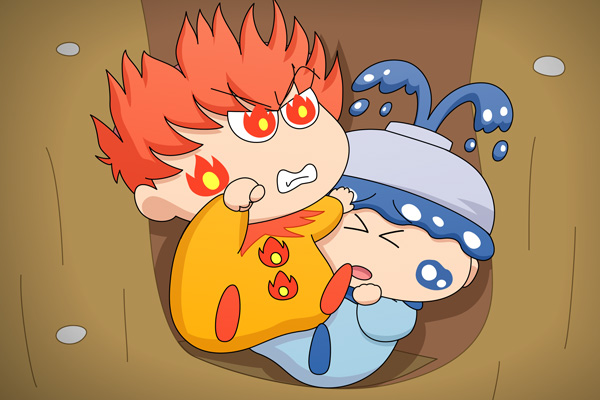

フィア「くそぅ、ドンタのヤツだな！ オレたちを落とし穴に嵌めたのは！！」
アクア「フィア、この体勢で暴れないでよ」
フィア「しょーがねーだろ。
オレだって早くここから出たいんだけど、
体が絡まって出られねぇんだよ！」
アクア「ということは、助けがくるまでボクたちはずっとこのまま・・・！？」
第６回目のお題は「密室に二人きり」。落とし穴を密室と呼ぶかどうかは微妙ですが…。
我らが神様をお題に登場してみました。なぜ落とし穴？ なぜドンタが？ といった疑問があるかと思いますが、その答えは何一つ用意していません。なぜフィアとアクアが一緒に！？が一番気になるところでしょうか？
ゲームなどでは火属性は水属性に弱いような設定がありますが、この後フィアはアクアと一緒にいて大丈夫なのかな？ ドンタに助け出される頃にはフィアはすっかりアクアのペースに巻き込まれておとなしくなっていそうです。
次回のお題は「背中合わせ」です。
(2012/11/23)